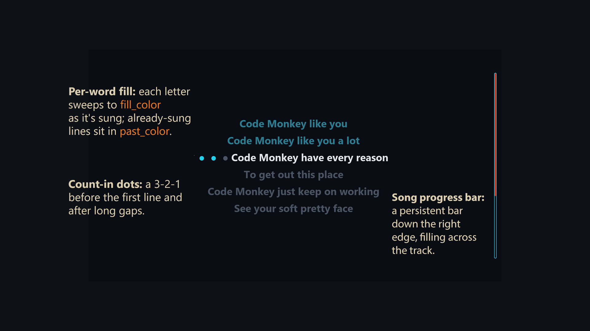

Karaoke Video Generator
karaoke_vid_gen is a Python CLI that turns a song into a karaoke video with per-word synced, hand-editable lyric timing. This page provides a demonstration of the result and process. See the Github repository for full documentation.
Jonathan Coulton — "Code Monkey" is provided under a Creative Commons license and is used as an example song. Please support the artist.
Contents
| Result | Alignment | Visual Design | Features |
Final Result Top of page
Samples of the final results are shown in the two clips below. The review render provides the full audio and is used to adjust timing as required. The karaoke render is the final product, with the vocal audio removed. Click the download links for full versions of the renders.
Rendered with the default config.
Aligner A/B Test (Whisper vs MMS) Top of page
The two aligners time the same words differently. Below is the 113s–127s window from each. Whisper over-holds the fill on the sustained "lot," while MMS finishes it earlier and moves on, enough to change whether the next line's count-in appears. The Example Workflow documentation details the processing of this song.
Screen Elements Top of page
Example elements below are drawn by the renderer and are configurable via
Configuration → [render].
Not all elements are shown in the images below or appear in the final render for this song.
Visual design is also covered in the Features
documentation.

Example visual elements. The fill of the count-in dots is the current word fill_color, and the lines above show past_color.
Example Features Top of page
A few features are discussed below. Refer to the Features and Usage docs for a comprehensive list and detailed descriptions.
Timing Adjustments
The aligner's output is a first draft. Word timings live in an editable timing.json, so a word's start or end can be adjusted by hand and the video re-rendered. For "Code Monkey" only a handful of small start/end tweaks were needed. A companion tool, Song Timing Marker, was used to determine accurate timestamp corrections. Larger corrections are handled by the nudge toolkit: coarse shifts, per-line anchors, and marked-line reflow. The Example Workflow walks through a full correction pass.
Line Splitting
A line too wide for the frame is flagged by the preflight check, then fit by
karaoke split: balanced into the fewest rows that fit and
rendered as a left-justified block.


Include Vocals
The separate stage splits the song into a vocals-removed instrumental and an isolated vocal stem, and the karaoke video only plays the instrumental. The original audio can be included over certain spans: an intro spoken line, a background "woah" hook or echo under a chorus, an ad-lib you don't want to karaoke. Periods to include can be specified in the no_extract text file (details).